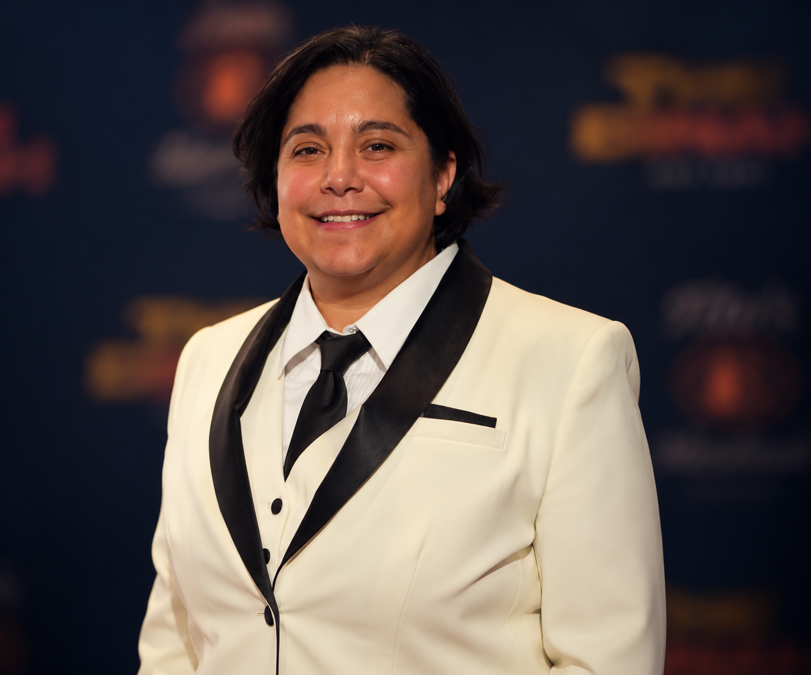
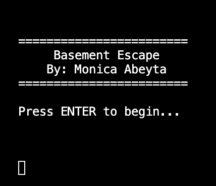

EDIT | CREATE | BUILD
From post-production to programming — building
on creative experience through computer science.
Editorial workflows and creative storytelling.
Building practical software and interactive experiences.
Exploring infrastructure, automation and reliable systems.
Where technology, design and experimentation meet.
ABOUT

I’m Monica Abeyta, originally from Los Angeles, California and now based in Cardiff, Wales. I spent more than 18 years working in television post-production, building a career around editorial workflows, technical problem-solving and creative collaboration.
After nearly two decades in the industry, I decided to take that experience in a new direction. I’m currently studying for an MSc in Computer Science at the University of Bath, developing my skills in programming, software development, systems and infrastructure.
My background in television taught me to work with complex workflows, technical systems and creative teams under real production pressures. I’m now applying that same way of thinking to software — breaking problems down, understanding how the pieces connect and building practical solutions.
I’m particularly interested in work where creative thinking and technical problem-solving overlap, whether that means building software, improving workflows or figuring out how all the pieces of a system fit together.
CURRENTLY EXPLORING
C · Python · Software Development · Java
FEATURED PROJECT
C · TERMINAL APPLICATION
A terminal-based escape room built in C. Explore the basement, examine objects, solve interconnected puzzles and uncover the combination needed to escape.

ABOUT THE PROJECT
Basement Escape began as a graphical escape-room concept built in Scratch. It became my first major C project and I adapted the idea into a terminal-based text adventure, allowing me to focus on program logic, player input, puzzle design and game-state management.
Rather than creating a fixed sequence of questions, I designed the basement to be explored freely. Players can investigate objects and discover clues in different orders, while the program tracks discoveries, solved puzzles and changing room states behind the scenes.
Building the game pushed me beyond the C concepts I had already covered in my MSc. I researched and applied string comparison, full-line player input, case-insensitive commands, boolean game states and a multi-file program structure.
C
Git & GitHub
Visual Studio
WebAssembly
Emscripten
Free-form exploration
Interconnected puzzles
Game-state progression
ASCII art
Case-insensitive commands